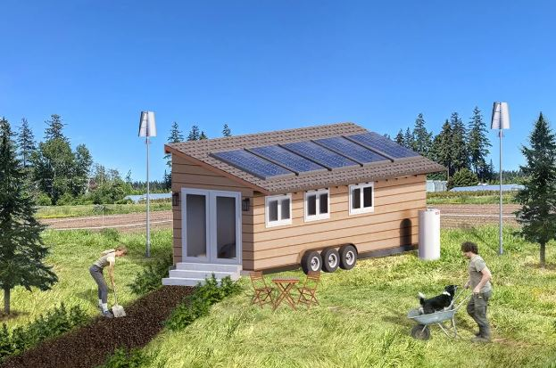
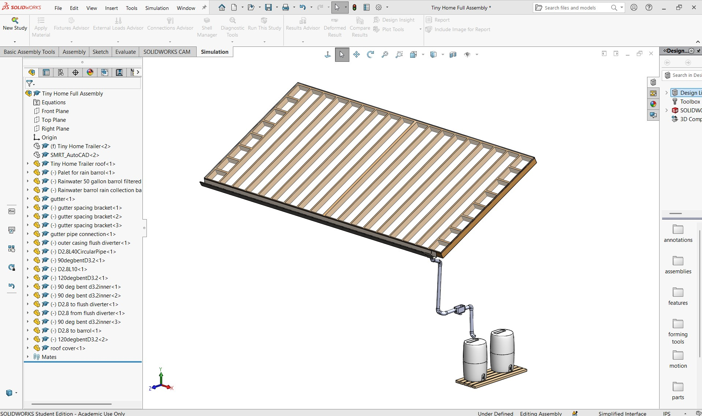
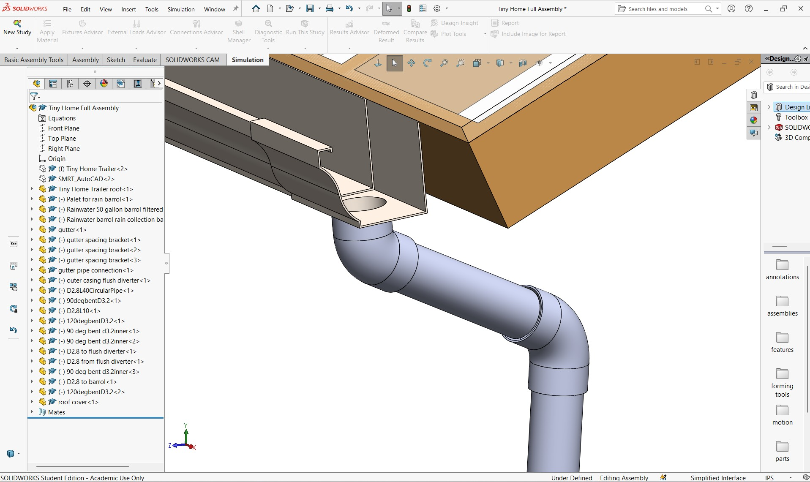
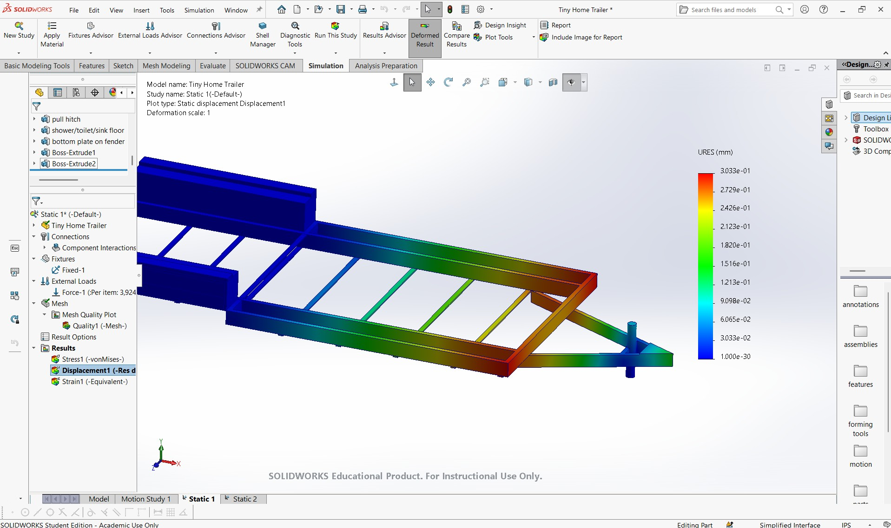
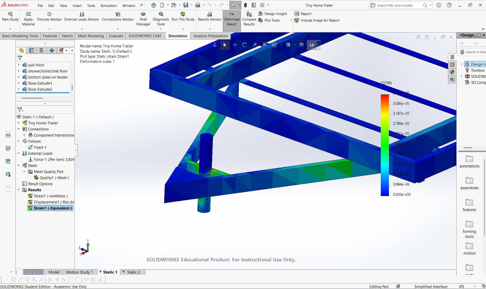
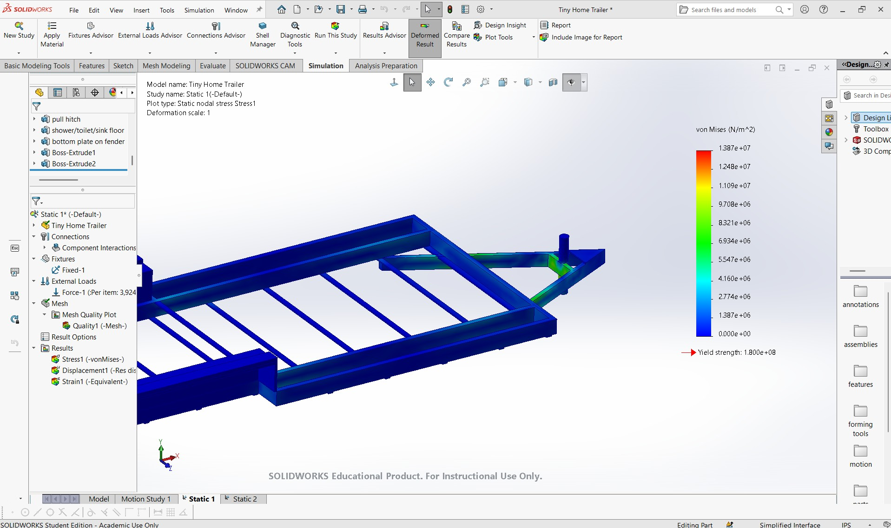
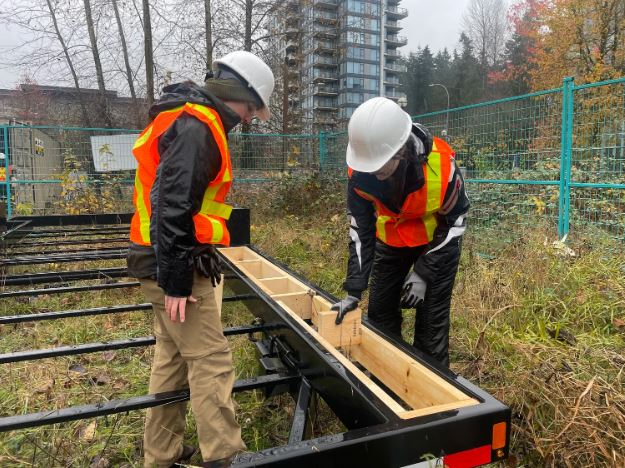
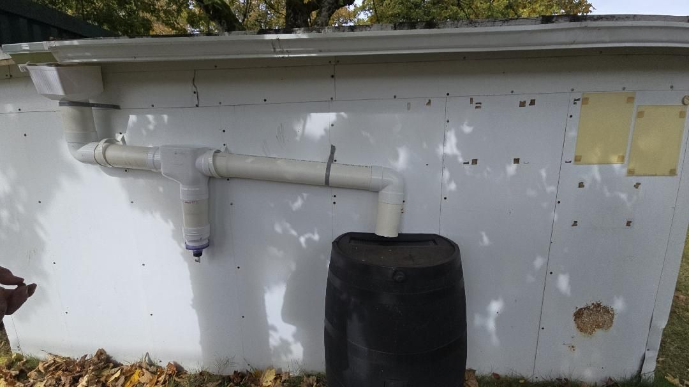

Tiny Home Water Systems
Mechanical Design & Testing

Overview
As a member of the UBC Sustaingineering Tiny Home Project in partnership with BWBF, I contributed to the design and development of a decentralized water system that provides a sustainable water solution for a tiny home. My work focused on designing the rainwater harvesting system and plumbing layout, ensuring the system was both functional and practical for off-grid use. I performed engineering analyses to support the design, including pump sizing calculations and structural analysis of the supporting frame to verify it could safely withstand the weight of the water storage system and associated components. These analyses informed key design decisions and ensured the system met both performance and safety requirements. Beyond the design phase, I manufactured and assembled functional prototypes to validate the concept, including the construction and testing of a custom gutter system for rainwater collection. This project strengthened my experience in CAD, engineering analysis, prototyping, and hands-on fabrication while working collaboratively within a multidisciplinary engineering team.
Key Deliverables
- Designed the rainwater harvesting and plumbing system layout for an off-grid tiny home.
- Performed pump sizing and structural analyses to validate system performance and frame integrity.
- Manufactured and tested functional prototypes, including a custom rainwater gutter collection system.
Role
Structural Analyst
Tools
SolidWorks, Excel/Sheets
Technical Documentation & Gallery







